北海道屈指の温泉地、登別。
クマ牧場や地獄谷は有名だが実はこの温泉街、近年になって新たなネタで町おこしを図っている。
そのネタとは…鬼さんである。
登別温泉の名所である地獄谷から着想を得たのだろうが、鬼で町おこしとはこれいかに。
しかし鬼サミットなどの鬼コミュニティーが広がる中、京都府の大江町なども確実に鬼効果で町のカラーを彩っているケースもあるのでこれはこれでアリかと。
登別駅を降りれば正面には鬼さん。
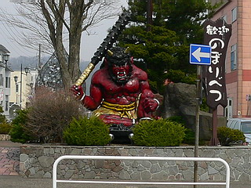
高速の登別インターを降りれば巨大な鬼さん。
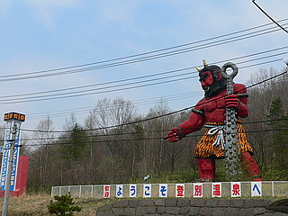 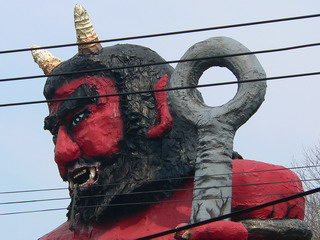
温泉街のそこかしこに石の鬼さん。
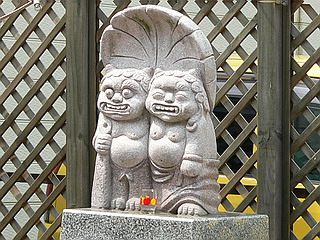 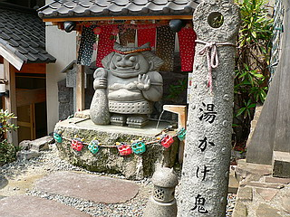
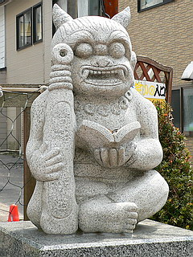
右
も
左
も
鬼
だ
ら
け
！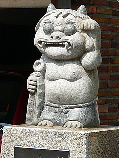
店先には金棒、路傍の祠を覗けば鬼…
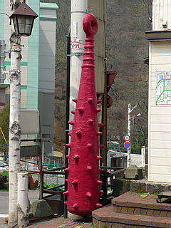 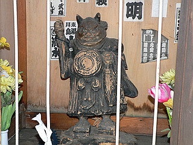
もはや鬼信仰の町と化しているといってもいいくらいの勢いで鬼が町を席巻している。
建設中の公園もこんな。
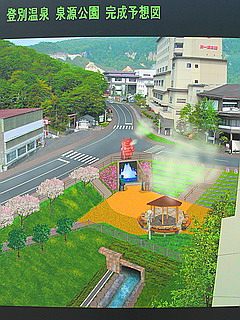 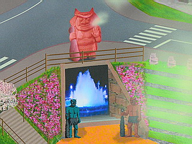
…やっぱ赤鬼と青鬼の間にはリアル地獄巡りが出来たりするんだろうか？
鬼さんが一生懸命働く姿を見るのが大好きな私としては是非電動八大地獄やら鬼の電飾パレードなどを切に所望する次第である。
頼みますよ～鬼の町、登別さん！
地獄谷近くのポケットパークには赤鬼青鬼が揃い踏み。
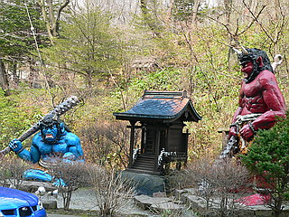
モノはコンクリだろう。
ペンキの塗り替えも小まめに行われているよう。
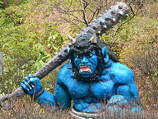 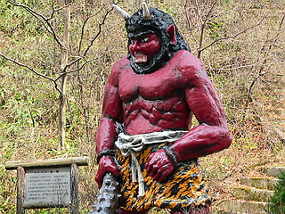
俺の膝に座ってメール打つな！
地獄に落すぞ！
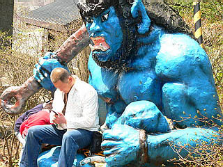
お父さん、メール送信完了後には鬼に連れて行かれるまでもなく、自らの足で地獄谷に行ってしまいました…成仏せいよ。
さて、そんな鬼だらけの温泉街にひときわ目立つ閻魔殿がある。
中には勿論閻魔サマ。
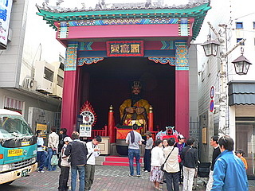
閻魔大王の隣にある浄玻璃の鏡の真ん中は何故か時計のようになっていて未を指していた。
これはつまり未年の人の裁判を今から行う、という事なのか…
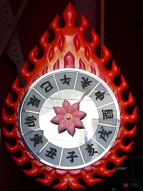 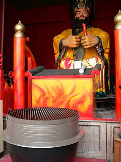
釜型賽銭箱も見逃せないナイスなアイテムである。
観光地らしく顔出し看板も常備。
自分で顔出しするのもアホらしいので代わりに閻魔サマに入っていただきました…
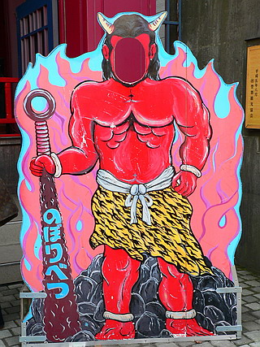 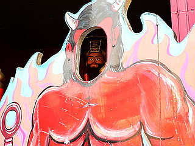
さて、そんなこんなで閻魔殿を見ているといつの間にか人がぞろぞろ集まってきた。
実は1日数回アトラクションがあるのだ。
お、時間だ。閻魔サマのお裁き、とくと拝見しましょうや。
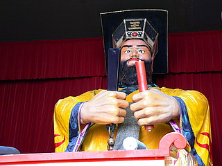 いよいよ裁判の始まりである。
こうしてみる限りおとなしそうな閻魔サマである。
これなら上手くすれば泣き落としで同情してくれるかも…
「おお、何と哀れな事よ。罪を憎んで人を憎まず、そなたは極楽に行くがよいぞ、これにて一件落着～！」
な～んてね。ウッシッシ…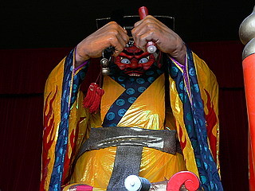 すると突如、大魔神のポーズで変身！
襟元がバックリ開いて中から真っ赤な怒りモードの閻魔サマが！！！！
文字通り鬼の形相。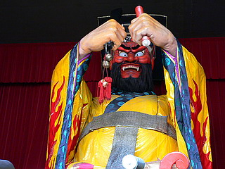 もうその後は手の付けられない暴走機関車っぷり。
もはや、裁判とか陪審員とか物的証拠などといった概念は彼岸の彼方。
「てめえ、気にいらねえ！全員地獄行き決定だ、アホ！」
ああ、どこぞの国の人民裁判みたいなノリになっちゃって。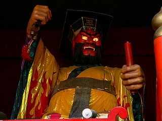 なおも怒り覚めやらぬ閻魔サマ。
目を赤く光らせて手を上下に動かし怒りのダンス。
ヘッドバンキングも忘れません。こんな感じで暴れてました。
稀に見る大暴れの電動閻魔であった。
この調子で電動地獄もどんどん作っちゃってもらいたいものである。
温泉街の道端に鬼が電動で責めまくる血飛沫八大地獄通りなんてのはどうでしょう？
観光客ドン引きだろうなあ～。俺はうっとりだけどね♡
さらに温泉街の外れにも巨大な鬼が。
こちらは何やら劇画チックな親子鬼。
何とも鬼尽くしの温泉街だった。
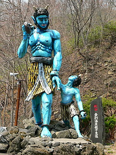 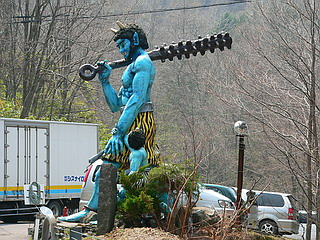
あ、そういえば全然お寺じゃなかったですね。
ま、いっか。
おまけ
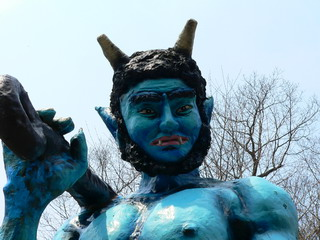 坊主、どうした？ 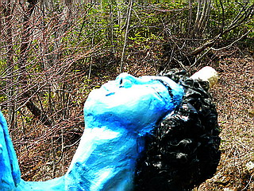 父ちゃん
オラ、母ちゃんが欲しい…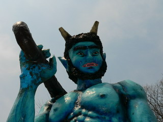 そうか… 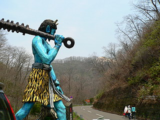 今度つくってやっから…
ああ～～！全っ然、面白くないっすね…